DELIGNY R&D · Fonds d'atelier · Catalogue
La technique au service de l'art.
Ingénieur en développement produit, Baptiste Placier accompagne depuis 2016 la conception et l'industrialisation de collections premium, là où l'exigence technique et l'exigence esthétique pèsent autant l'une que l'autre.
Entre la création, le bureau d'études, les ateliers et les fournisseurs, il structure les développements complexes, arbitre matières et procédés, et tient la qualité, le coût et le délai jusqu'à la mise en production. Sa double culture, ingénierie et création : voir l'objet en trois dimensions avant qu'il existe, et savoir comment il sera fabriqué.
Objets, horlogerie, mobilier, luminaires.
Planches 01 à 19 · 19 pièces
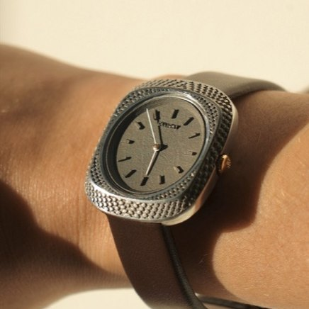
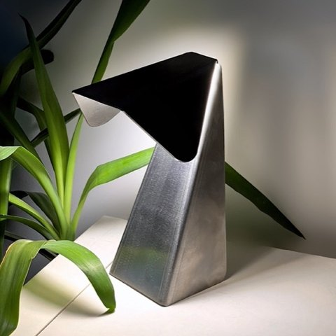
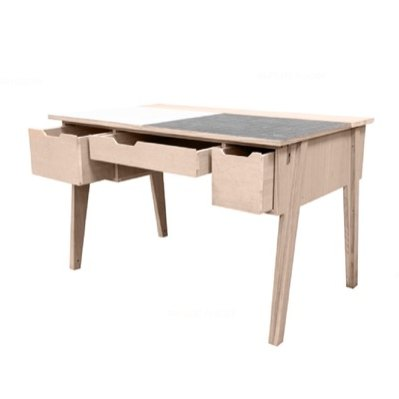
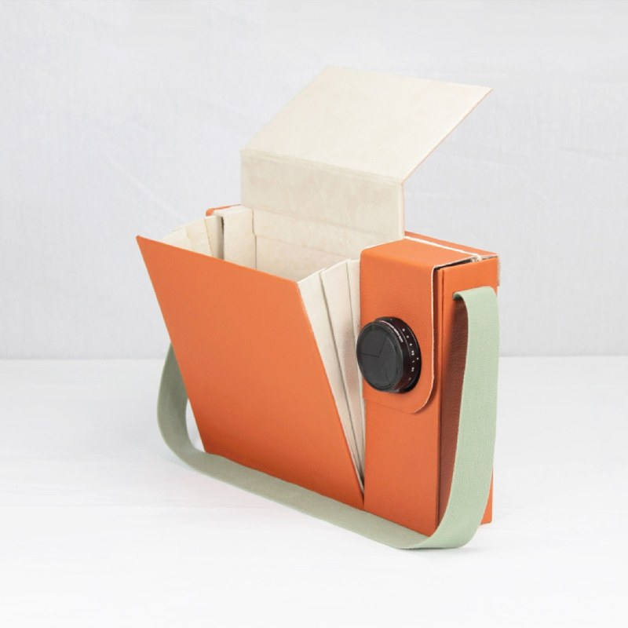
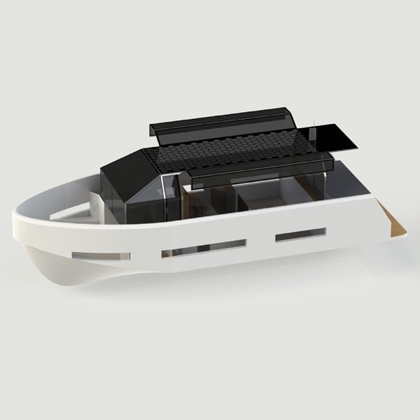
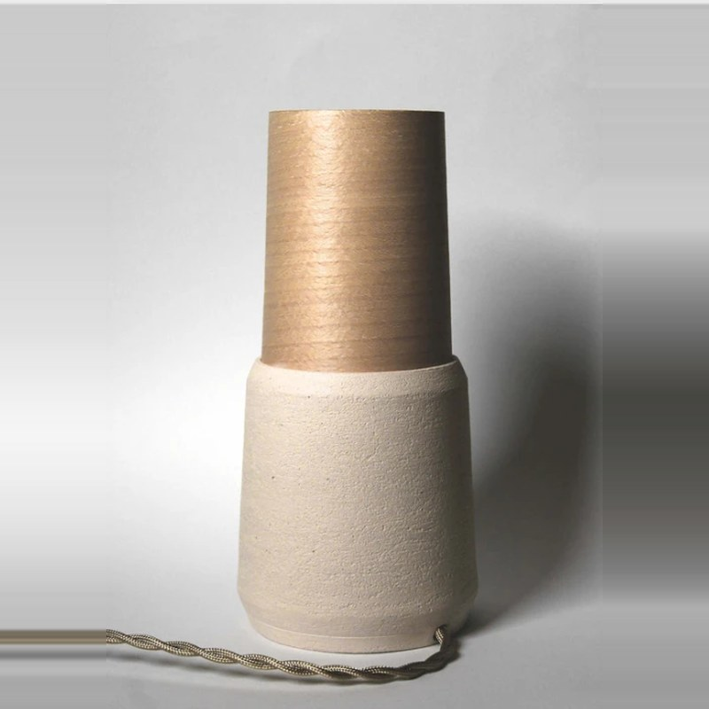
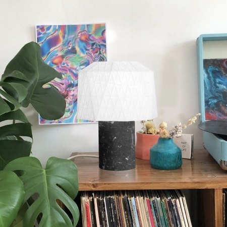
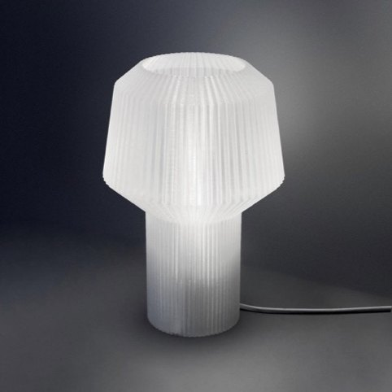
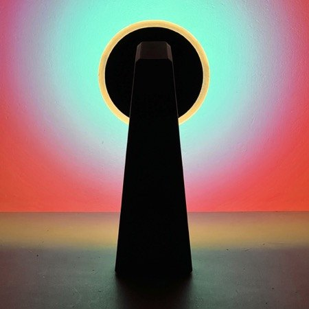
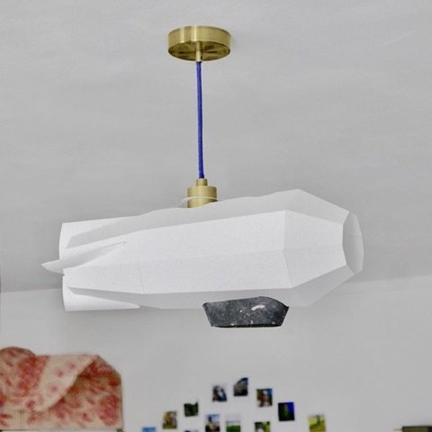
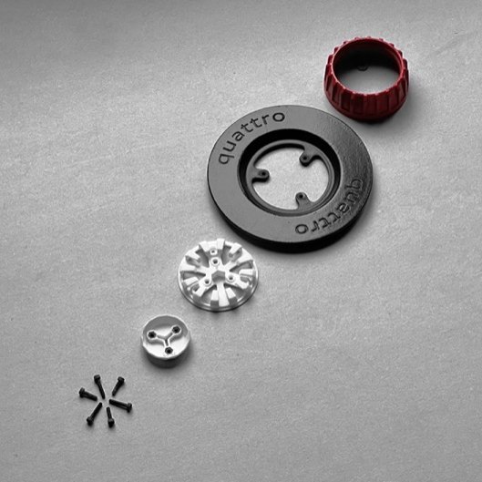
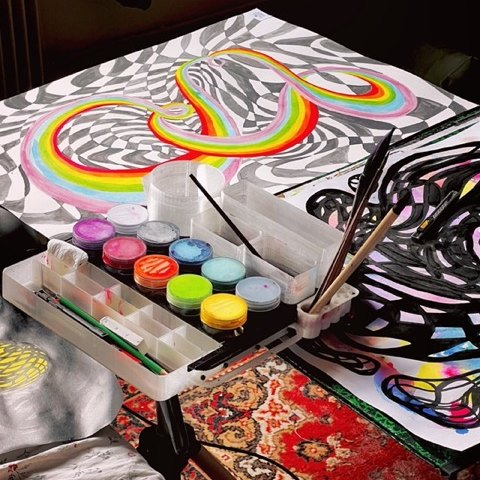
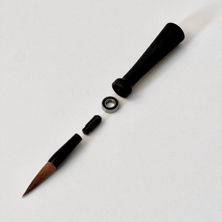
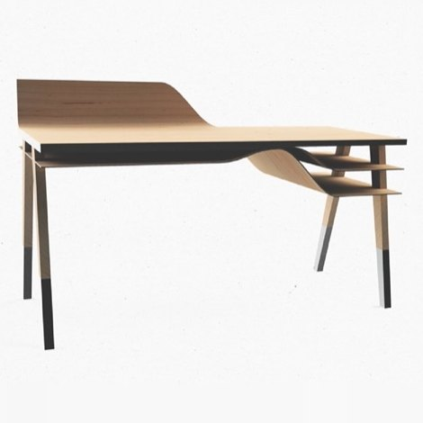
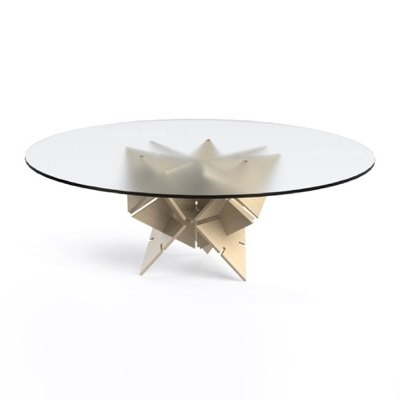
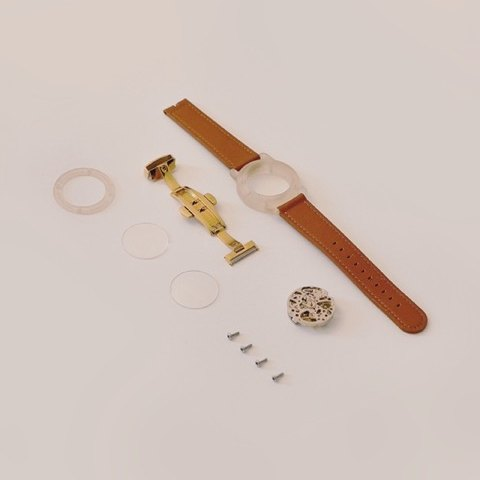
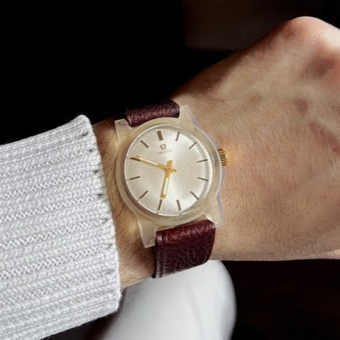
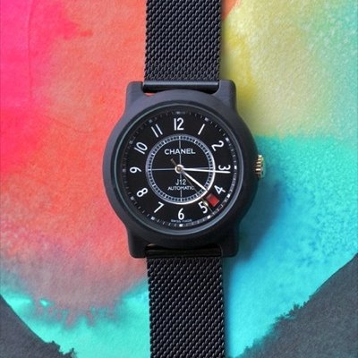
Engrenage et mouvement, carte électronique, programmation.
Planches 20 à 23 · 04 pièces
Moteurs, cartes électroniques, firmware et logiciels d'atelier : ces éléments sont souvent invisibles dans le produit fini, mais ils déterminent son fonctionnement.
Tableaux, affiches & éditions
Planches 24 à 26 · 3 pièces
Trois formes d'expression réunies autour de l'art, de l'expérimentation et de la fabrication.
Les tableaux sont des œuvres originales réalisées entièrement à la main, à l'encre et à la peinture, au format raisin (50 × 65 cm). Chaque composition utilise notamment un pinceau rotatif et une palette à encres sur mesure, deux outils conçus au sein de l'atelier pour explorer de nouvelles techniques picturales. Les œuvres sont présentées dans une galerie virtuelle en 3D, accompagnées de leur certificat d'authenticité et d'un espace d'achat et de vente.
Les affiches, au format A3, associent modélisation 3D, photographie et composition graphique. Réalisée avant l'essor de l'intelligence artificielle générative, cette collection explore les possibilités de création numérique à partir d'outils de conception et de production maîtrisés par l'atelier.
Le fanzine prolonge cette démarche en interrogeant l'avenir de la fabrication. Inspiré du mouvement maker, il explore l'autoproduction des objets, les nouvelles technologies et une question centrale : pourrons-nous un jour fabriquer nous-mêmes tout ce dont nous avons besoin ?
Quatre métiers, une seule chaîne.
Conception et industrialisation
- Analyse des concepts et validation de faisabilité
- Traduction de l'intention créative en architecture produit
- Modélisation 3D exploitable en production
- Arbitrage matières et procédés
- Dossiers techniques structurés
Prototypage
- Prototypes avec des ateliers spécialisés
- Impression 3D et itérations techniques
- Validation des prototypes et préséries
- Gestion des aléas techniques
Pilotage de production
- Planification multi-acteurs
- Interface bureau d'études, ateliers, fournisseurs
- Analyse des devis et optimisation des coûts
- Suivi qualité, coût, délai jusqu'à la série
Création visuelle
- Visualisation 3D technique et esthétique
- Photographie produit
- Mise en valeur des collections
- Supports de présentation et positionnement
Une idée que vous ne savez pas encore comment concrétiser, un produit existant à améliorer, un fabricant fiable ou un dessinateur méticuleux à trouver ? Recherche et développement, évaluation des coûts, suivi de prototype et de fabrication : nous transformons l'intention en objet.
Parler de votre projet